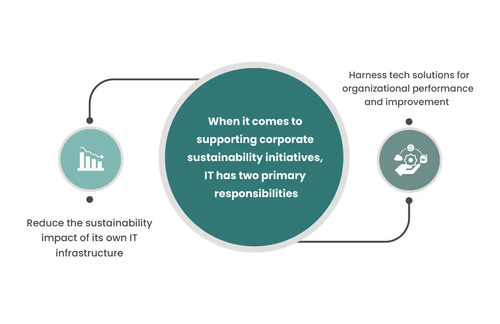

In recent years, an increasing number of global organizations have committed to ambitious pledges, setting clear targets for environmental and social sustainability. Despite these commitments, numerous organizations face challenges in making strides toward their sustainability objectives.
A crucial but often missed aspect is the necessity for a well-thought-out technology strategy. This strategy serves as the link connecting a company's sustainability goals with practical IT actions. The challenge is to smoothly integrate technology into the broader sustainability mission, making sure it accelerates progress rather than hindering it. As organizations navigate these challenges, the role of IT becomes essential not just in reducing its impact but also in using technology to drive the entire organization toward its sustainability targets.

Responsibilities of IT in Corporate Sustainability:
Reducing IT Infrastructure Impact:
- It needs to minimize the sustainability impact of its own infrastructure, considering factors like energy efficiency and carbon emissions.
- With digital transformation initiatives, organizations are increasingly relying on IT for business operations, making sustainability a priority.
Leveraging Technology for Disclosure and Improvement:
- IT should utilize technology solutions that enable organizations to visualize and enhance their performance in terms of sustainability.
Requests for proposals (RFPs) are increasing including sustainability requirements, emphasizing areas such as energy efficiency and carbon emissions.
Sustainable IT Infrastructure:
Carbon Emissions and Digital Transformation:
- IT contributes significantly to an organization's carbon emissions, making it a focal point for companies committed to reducing greenhouse gas emissions.
- Beyond digital transformation, organizations need to align IT strategy with long-term sustainability goals.
Lifecycle Management and Sustainability Data:
- Organizations are incorporating sustainability criteria into the full lifecycle management of IT assets.
- Sustainability data is integrated into decision-making processes related to asset utilization, maintenance, repair, and end-of-life options.
Vendor and Cloud Service Provider Contributions:
- IT vendors are recognizing the importance of sustainability and adapting solutions to be more energy-efficient and environmentally friendly.
- Cloud service providers are increasing their use of renewable energy sources, and data center operators are enhancing energy efficiency.
Driving Improvement Through IT Sustainability Solutions:
Data Accessibility and Visibility:
- IT plays a crucial role in providing access to sustainability data, which may be scattered across different sources and departments in an organization.
- Aggregating internal data and creating platforms for data sharing are essential for effective sustainability management.
Software Solutions for Sustainability:
- The software landscape has seen a surge in sustainability solutions, offering organizations enhanced visibility and awareness of their sustainability performance.
In conclusion, IT has a dual responsibility: first, to optimize its infrastructure for sustainability, and second, to use technology solutions to drive the organization's overall sustainability IT objectives. Integrating sustainability principles into IT practices is increasingly crucial, influencing internal operations and external partnerships.